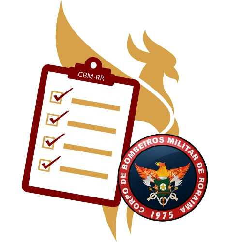

CORPO DE BOMBEIROS MILITAR
RORAIMA
CBM
RR

SIGMA
Sistema Integrado de Gestão de Materiais
1
Posto de Serviço
2
Local de Conferência
Escolha o Posto de Serviço
-- Selecione um Posto --
ALFA
BRAVO
CHARLIE
DELTA
CARACARAÍ
RORAINÓPOLIS
PACARAIMA
OP. VERÃO SEM FOGO
Escolha o Local
-- Selecione um Local --
INICIAR CONFERÊNCIA